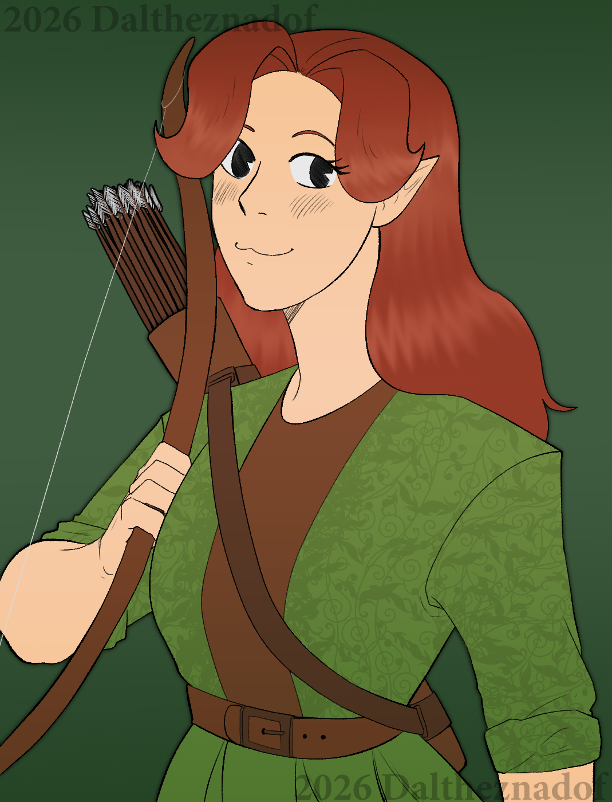
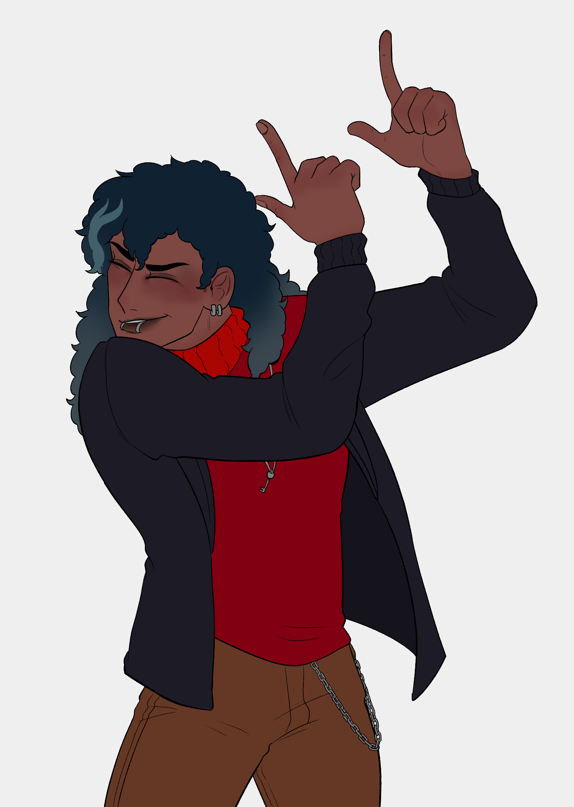

Mentior News
Timeframe XXXX by Fake Man
Local Man Stares At Painting For 12 Minutes Hoping Meaning Will Reveal Itself Out Of Pure Awkwardness
BROOKLYN, NY—Standing motionless in front of a large abstract canvas Thursday evening, local man Daniel Reeves reportedly stared at the painting for a full 12 minutes, quietly hoping that if he looked thoughtful enough, the artwork’s meaning would eventually reveal itself.
Witnesses inside the contemporary gallery confirmed Reeves began the ordeal confidently, clasping his hands behind his back and nodding slightly—an internationally recognized signal that a person understands art.
“I think it’s… about society?” Reeves whispered to no one in particular, slowly leaning closer to the painting, which consisted primarily of a large red rectangle and what experts later confirmed was “a smaller, slightly angrier red rectangle.”
Gallery employee Marissa Kline said Reeves’ behavior is extremely common among first-time visitors attempting to survive the social minefield of modern art.
“You can usually tell when someone has no idea what they’re looking at,” Kline said. “They tilt their head about 15 degrees and squint like the painting might suddenly turn into a hidden sailboat.”
According to sources, Reeves’ confusion intensified after overhearing another visitor describe the work as “a bold interrogation of emotional architecture,” prompting Reeves to nod solemnly while mentally repeating the phrase in case someone asked him about it later.
At press time, Reeves had reportedly moved on to a sculpture made of a shopping cart filled with sand, where he confidently told a friend it was “definitely about capitalism,” before reading the label and discovering it was actually titled Shopping Cart Filled With Sand.

